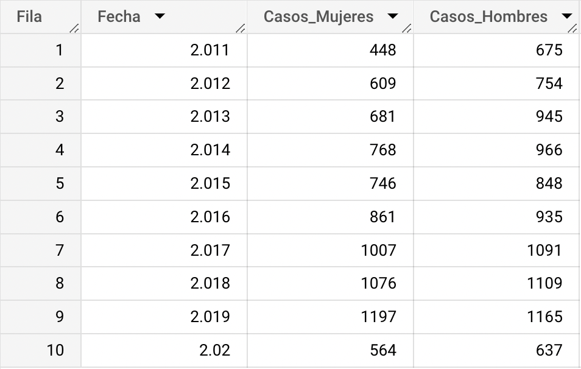

Consulta BigQuery
¿Cuántos casos de agresiones por animales
transmisores de rabia se presentaron
en hombres y mujeres a partir del año 2011?
Looker Studio
Para ver con mayor detalle el dashboard con relación a la consulta de BigQuery, hacer click
Análisis
Es posible observar que en todos los años tomados en cuenta entre 2011 y 2020, hay un mayor número de casos de agresión en hombres en comparación al número de casos de mujeres, a excepción del año 2019, con una diferencia de 32 registros.
-
